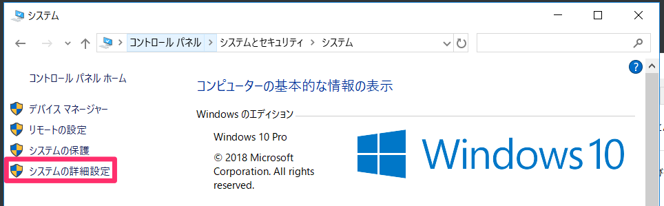
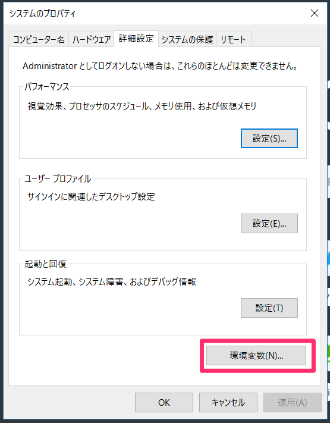
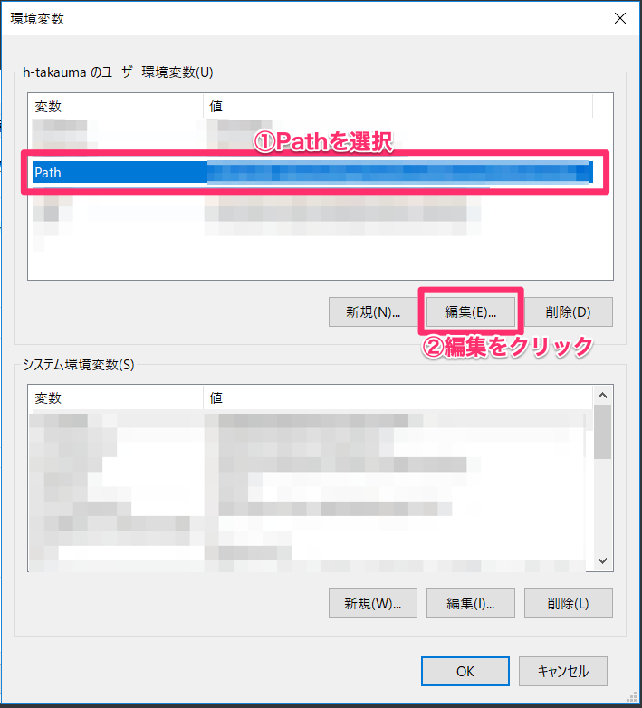
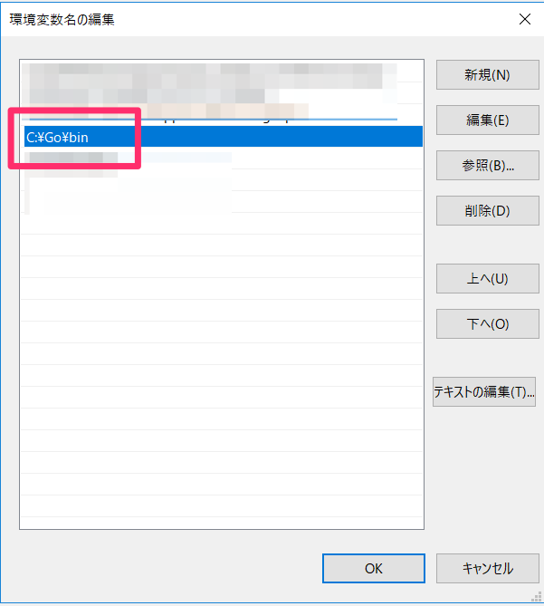
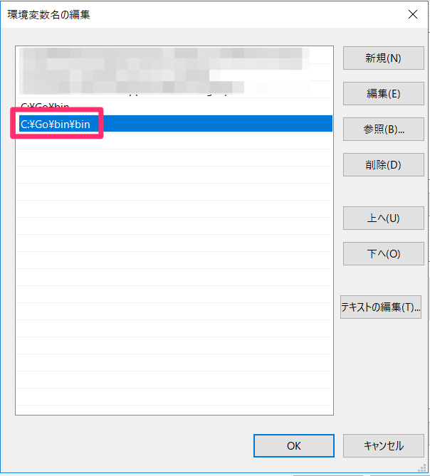

<!doctype html>

<html>
<head>
  <meta name="viewport" content="width=device-width, minimum-scale=1.0, initial-scale=1.0, user-scalable=yes">
  <meta name="theme-color" content="#4F7DC9">
  <meta charset="UTF-8">
  <title>資料タイトル</title>
  <script src="../../bower_components/webcomponentsjs/webcomponents-lite.js"></script>
  <link rel="import" href="../../elements/codelab.html">
  <link rel="stylesheet" href="//fonts.googleapis.com/css?family=Source+Code+Pro:400|Roboto:400,300,400italic,500,700|Roboto+Mono">
  <style is="custom-style">
    body {
      font-family: "Roboto",sans-serif;
      background: var(--google-codelab-background, #F8F9FA);
    }
  </style>
  
</head>
<body unresolved class="fullbleed">

  <google-codelab title="資料タイトル"
                  environment="web"
                  feedback-link="">
    
      <google-codelab-step label="googlecodelabs環境構築" duration="0">
        <p>googlecodelabsの解説をします！</p>
<h2>goをインストールしよう！</h2>
<p>Goの環境を整えます。こちらからインストールしてください。</p>
<p><a href="https://golang.org/doc/install" target="_blank">https://golang.org/doc/install</a></p>
<h2>環境変数設定（Windows編）</h2>
<p>Windowsの方はGoの環境変数にインストールしたフォルダを指定しましょう。</p>
<p>コントロールパネルから［システムの詳細設定］をクリック</p>
<p></p>
<p>［環境変数］をクリック</p>
<p></p>
<p>Pathをクリックして、［編集］ボタンをクリックします。</p>
<p></p>
<p>インストールしたGoの実行環境フォルダを指定します。</p>
<p></p>
<h2>環境変数設定（Mac編）</h2>
<p>Macの方はbash_profileにPathを通しておきましょう</p>
<pre><code>export PATH=$PATH:/usr/local/go/bin
</code></pre>


      </google-codelab-step>
    
      <google-codelab-step label="claatをインストール" duration="0">
        <h2>実行環境インストール</h2>
<p>mdファイルをエクスポートしてhtmlにコンバートするプログラムをインストールします。<br>コマンドプロンプトやターミナルを開いてください。</p>
<pre><code>$ go get github.com/googlecodelabs/tools/claat
</code></pre>
<h2>Pathを通す(Windows)</h2>
<p>Windowsの方はclaatコマンドを実行するためにPathを通しておきます。</p>
<p></p>


      </google-codelab-step>
    
      <google-codelab-step label="exportする" duration="0">
        <p>mdファイルをエクスポートしましょう。</p>
<h2>exportコマンドを実行する</h2>
<p>コマンドプロンプトやターミナルを開いて、下記コマンドを実行します。<br><br>エクスポートしたいフォルダにまず移動しておいてください。</p>
<pre><code>$ cd エクスポートするフォルダ
$ claat export index.md
</code></pre>
<p>すると<code>dist</code>フォルダが作成されます。distフォルダに移動してください。serveコマンドを実行して静的サイト用ファイルを書き出します。</p>
<p>自動的にブラウザが起動してcodelabsを確認することができます。</p>
<pre><code>$ cd dist
$ claat serve
</code></pre>
<p>あとはdistフォルダの中身をS3等にデプロイすればOKです！</p>


      </google-codelab-step>
    
  </google-codelab>

  <script>
    (function(i,s,o,g,r,a,m){i['GoogleAnalyticsObject']=r;i[r]=i[r]||function(){
    (i[r].q=i[r].q||[]).push(arguments)},i[r].l=1*new Date();a=s.createElement(o),
    m=s.getElementsByTagName(o)[0];a.async=1;a.src=g;m.parentNode.insertBefore(a,m)
    })(window,document,'script','//www.google-analytics.com/analytics.js','ga');
    ga('create', 'UA-49880327-14', 'auto');

    (function() {
      var gaCodelab = '';
      if (gaCodelab) {
        ga('create', gaCodelab, 'auto', {name: 'codelab'});
      }

      var gaView;
      var parts = location.search.substring(1).split('&');
      for (var i = 0; i < parts.length; i++) {
        var param = parts[i].split('=');
        if (param[0] === 'viewga') {
          gaView = param[1];
          break;
        }
      }
      if (gaView && gaView !== gaCodelab) {
        ga('create', gaView, 'auto', {name: 'view'});
      }
    })();
  </script>

</body>
</html>
